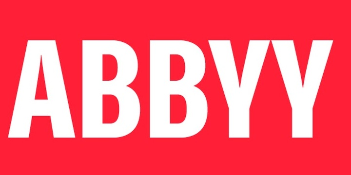

Яндекс
- крупнейшая отечественная IT-компания, которая занимается разработкой поисковой системы, интернет-маркетингом, электронной коммерцией, облачными сервисами и другими проектами. Яндекс был основан в 1997 году и с тех пор стал одним из лидеров в российской IT-индустрии.
Подробнее
Kaspersky Lab
- компания, специализирующаяся на разработке антивирусного программного обеспечения и других решений для защиты компьютеров и мобильных устройств. Компания была основана в 1997 году и является одним из мировых лидеров в области кибербезопасности.
Подробнее

ABBYY
- разработчик программного обеспечения для распознавания текста и конвертации документов. Компания была основана в 1989 году в России и с тех пор стала мировым лидером в своей области.
Подробнее
Parallels
- разработчик программного обеспечения для виртуализации операционных систем. Компания была основана в 1999 году в России и с тех пор стала мировым лидером в области виртуализации.
Подробнее